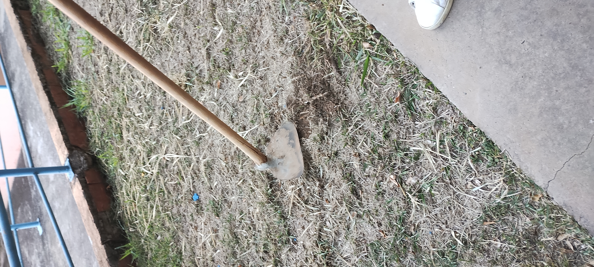
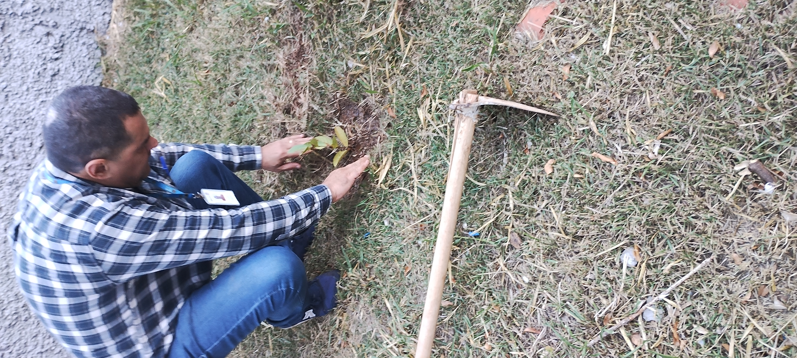
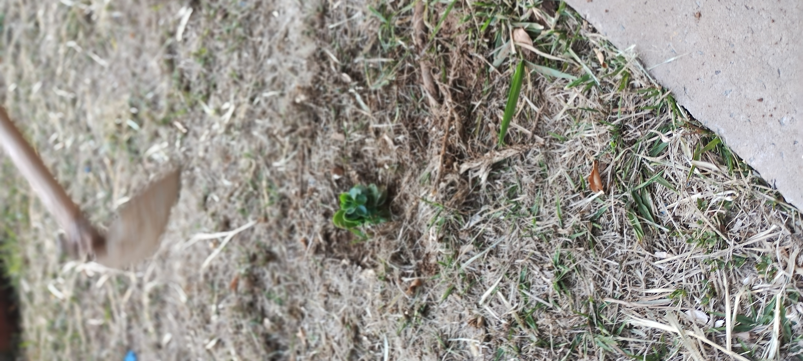
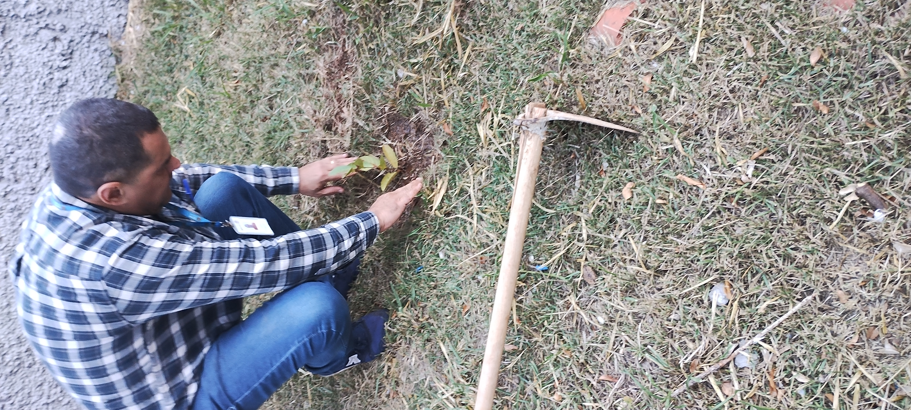
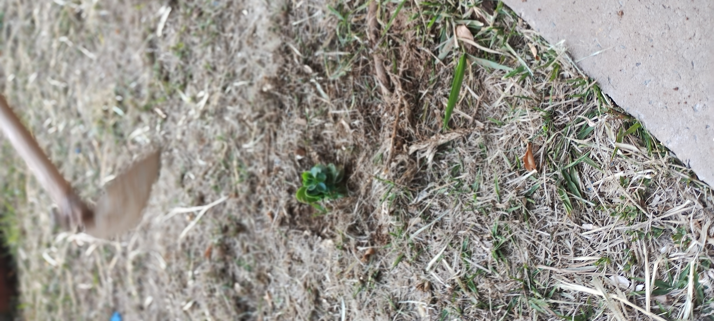
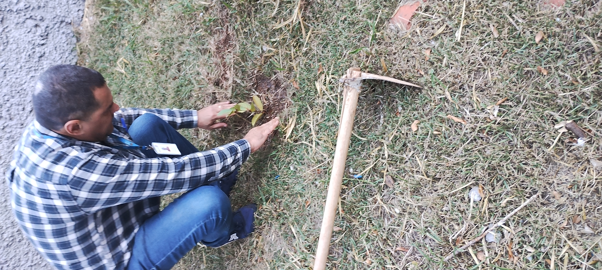
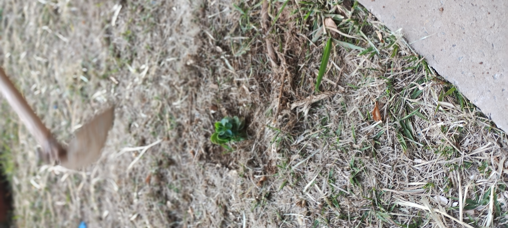

Plantio de Mudas na Escola CEMUS V
Na data de 05 de agosto, os alunos do grêmio do 5º, 4º, 6º, 7º e 9º anos realizaram o plantio de mudas na escola CEMUS V. Esta ação teve como objetivo enriquecer a consciência de preservação do meio ambiente e também cuidar do nosso Rio Tietê.
O projeto "Tietê Vida que Segue" visa engajar a comunidade escolar e incentivar a participação ativa em atividades de conservação ambiental. Através dessas iniciativas, esperamos promover um futuro mais sustentável para todos.
Galeria de Fotos



 






